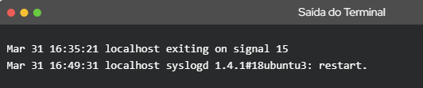
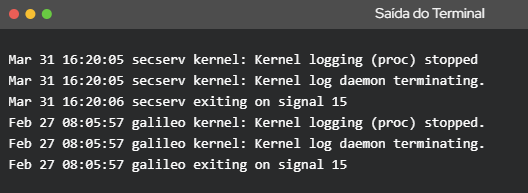

◉ Como funcionam os logs no Linux
◉ Uma definição dos logs no Linux
Os logs do Linux fornecem uma linha de tempo dos eventos para o kernel Linux, aplicativos e sistema, e são uma
valiosa ferramenta de solução de problemas quando você encontra problemas. Essencialmente, a análise de arquivos
de log é a primeira coisa que um administrador precisa fazer quando um problema é descoberto.
Para problemas específicos do aplicativo da área de trabalho, os arquivos de log são escritos em locais
diferentes. Por exemplo, o Chrome grava relatórios de falhas em ‘~/.chrome/Crash Reports’. Onde um aplicativo
desktop grava logs depende do desenvolvedor e se o aplicativo permitir a configuração de log personalizada.
Os arquivos são armazenados em texto simples e podem ser encontrados no diretório /var/log e subdiretório.
Existem logs do Linux para tudo: sistema, kernel, gerenciadores de pacotes, processos de inicialização, Xorg,
Apache, MySQL. Neste artigo, o tópico se concentrará especificamente nos logs do sistema Linux.
Você pode mudar para este diretório usando o comando cd. Você precisará ser o usuário root para visualizar ou
acessar arquivos de log em sistemas operacionais Linux, ou Unix.
◉ Como ver os logs
Os logs do Linux podem ser visualizados com o comando cd /var/log, depois digitando o comando ls para ver os logs
armazenados neste diretório. Um dos logs mais importantes para visualizar é o syslog, que registra tudo, exceto
as mensagens relacionadas a autenticação.
Utilize o comando less /var/log/syslog para ver tudo sobre o syslog, mas o zoom em um problema específico levará
um tempo, já que este arquivo tende a ser longo. Você pode usar Shift + G para chegar ao final do arquivo, denotado
por “END”.
Você também pode visualizar logs via dmesg para imprimir o buffer do kernel. Ele imprime tudo e o envia até o final
do arquivo. A partir daí, você pode usar o comando dmesg | less para percorrer a saída. Se você deseja visualizar
entradas de registro para a instalação do usuário, você pode usar o comando dmesg -facility = user.
Por fim, você pode usar o comando tail para visualizar arquivos de log. É uma das ferramentas mais fáceis que você
pode usar, uma vez que mostra apenas a última parte dos logs, onde o problema geralmente reside. Para isso, use
o comando tail /var/log/syslog ou tail -f /var/log/syslog.
O tail continuará monitorando o arquivo de log e imprimirá a próxima linha escrita no arquivo, permitindo que
você siga o que está escrito no syslog conforme ele é atualizado. Para um número específico de linhas (exemplo,
as últimas 5 linhas) use tail -f -n 5 /var/log/syslog, que imprime as últimas 5 linhas. Uma vez que uma nova
linha vem, a antiga é removida. Para escapar do comando tail, pressione Ctrl + X.
◉ Os logs mais importantes do Linux
A maioria dos diretórios pode ser agrupada em uma das quatro categorias:
• Logs de Aplicação
• Logs de Eventos
• Logs de Serviço
• Logs do Sistema
◉ Monitoramento do log no Linux
O monitoramento de cada log é uma tarefa árdua, fazendo com que ferramentas como o Retrace, que combina o APM com
gerenciamento de log centralizado, permitindo que você colete todos os dados de log em um só lugar, essencial para
os desenvolvedores. Os logs para você monitorar podem depender de seus objetivos ou outras variáveis, mas há algum
consenso sobre alguns dos registros mais críticos, necessários para monitorar, como:
• /var/log/syslog ou /var/log/messages: mensagens gerais, bem como informações relacionadas ao sistema.
Essencialmente, este registro armazena todos os dados de atividade em todo o sistema global. Observe que a
atividade para sistemas baseados em Redhat, como CentOS ou Rhel, é armazenada em mensagens, enquanto o Ubuntu e
outros sistemas baseados em Debian são armazenados no Syslog.
• /var/log/auth.log ou /var/log/secure: armazena logs de autenticação, incluindo logins e métodos de autenticação
bem-sucedidos e com falhas. Novamente, o tipo de sistema determina onde os registros de autenticação são
armazenados; As informações no Debian/Ubuntu são armazenadas em /var/log/auth.log, enquanto no Redhat/CentrOS
é armazenado em /var/log/secure.
• /var/log/boot.log: um repositório de todas as informações relacionadas à inicialização e quaisquer mensagens
registradas durante a inicialização.
• /var/log/maillog ou /var/log/mail.log: armazena todos os logs relacionados aos servidores de e-mail, útil quando
você precisa de informações sobre postfix, smtpd ou qualquer serviço relacionado ao email que esteja sendo
executado em seu servidor.
• /var/log/kern: armazena logs do Kernel e dados de aviso. Esse registro também é útil para solucionar problemas de
kernels personalizados.
• /var/log/dmesg: mensagens relacionadas aos drivers de dispositivo. O comando dmesg pode ser usado para visualizar
mensagens neste arquivo.
• /var/log/faillog: contém informações sobre todas as tentativas de login falhas, o que é útil para obter informações
sobre falhas de login, como aquelas que tentam hackear credenciais de login e ataques de força bruta.
• /var/log/cron: armazena todas as mensagens relacionadas a Crond (tarefas cron), como quando o daemon cron iniciou
um trabalho, mensagens de falha relacionadas, etc.
• /var/log/yum.log: se você instalar pacotes usando o comando yum, este registro armazena todas as informações
relacionadas, o que pode ser útil para determinar se um pacote e todos os componentes foram instalados
corretamente.
• /var/log/httpd/: um diretório contendo arquivos error_log e access_log do daemon httpd Apache. O error_log contém
todos os erros encontrados pelo httpd. Esses erros incluem problemas de memória e outros erros relacionados ao
sistema. Access_log contém um registro de todos os pedidos recebidos em HTTP.
• /var/log/mysqld.log ou /var/log/mysql.log: arquivo de log do MySQL que registra todas as mensagens de depuração,
falha e sucesso. Contém informações sobre o início, parada e reinício do MySQL daemon mysqld. Esta é outra
instância onde o sistema determina o diretório; RedHat, CentOS, Fedora e outros sistemas baseados em RedHat
usam /var/log/mysqld.log, enquanto o Debian/Ubuntu usa o diretório /var/log/mysql.log.
◉ Exemplos de Saída
Aqui está um caso do Syslogd no Ubuntu (sair e reiniciar):

E encerramento do sistema do kernel do Linux:
